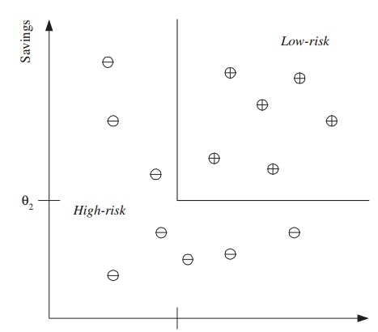
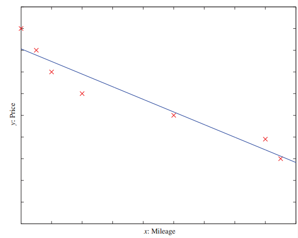

Headline: [4]Introduction to Machine Learning: (chapter one[2])
Introduction: Examples of Machine Learning Applications (第一章[2])
声明: 本篇博文为本人阅读机器学习导论的读书笔记
为什么选择英文版？Why am i rewrite?
由于本人惨不忍睹的英语，于是首先选择了中文版，可是，昨天突发奇想，反正机器学习也是不会，英语也是不会，不如省事一点一起学，于是，我选择了英文版
Introduction
Examples of Machine Learning Applications
Learning Association
In the case of retail—for example, a supermarket chain—one application of machine learning is basket analysis, which is finding associations between products bought by customers: If people who buy X typically also buy Y, and if there is a customer who buys X and does not buy Y, he or she is a potential Y customer. Once we find such customers, we can target them for cross-selling.
association [əsəʊsɪ'eɪʃ(ə)n; -ʃɪ-] 协会，联盟，社团，联合，联想
potential [pəˈtenʃl] 潜能，可能性，潜在的，可能的，电势
In finding an association rule, we are interested in learning a conditional probability of the form P(Y| X) where Y is the product we would like to condition on X, which is the product or the set of products which we know that the customer has already purchased.
probability [prɒbə'bɪlɪtɪ] 可能性，机率，概率
Let us say, going over our data, we calculate that P(chips| beer) = 0.7.
Then, we can define the rule:
70 percent of customers who buy beer also buy chips.
We may want to make a distinction among customers and toward this, estimate P(Y| X, D) where D is the set of customer attributes, for example, gender, age, marital status, and so on, assuming that we have access to this information. If this is a bookseller instead of a supermarket, products can be books or authors. In the case of a web portal, items correspond to links to web pages, and we can estimate the links a user is likely to click and use this information to download such pages in advance for faster access
distinct [dɪ'stɪŋ(k)t] 明显的，独特的，有区别的，清楚的
distinction [dɪ'stɪŋ(k)ʃ(ə)n] 区别，差别，特性，荣誉，勋章
gender ['dʒendə] 性，性别，性交，生
marital ['mærɪt(ə)l] 婚姻的，夫妇间的
protal 先天的，门户，入口网站
correspond [kɒrɪ'spɒnd] 符合，一致，相应，通信
Classification
A credit is an amount of money loaned by a financial institution, for example, a bank, to be paid back with interest, generally in installments.
信用度决定了金融机构的贷款数额，例如，在分期付款中银行允许的分期金额取决于你的偿还能力。
It is important for the bank to be able to predict in advance the risk associated with a loan, which is the probability that the customer will default and not pay the whole amount back.
This is both to make sure that the bank will make a profit and also to not inconvenience a customer with a loan over his or her financial capacity.
我们既要保证银行能够获得利益，又要确保不会因为给用户提供超出他们经济实力的贷款而带来的不变(恶性后果)。
In credit scoring (Hand 1998), the bank calculates the risk given the amount of credit and the information about the customer. The information about the customer includes data we have access to and is relevant in calculating his or her financial capacity—namely, income, savings, collaterals, profession, age, past financial history, and so forth. The bank has a record of past loans containing such customer data and whether the loan was paid back or not. From this data of particular applications, the aim is to infer a general rule coding the association between a customer’s attributes and his risk. That is, the machine learning system fits a model to the past data to be able to calculate the risk for a new application and then decides to accept or refuse it accordingly.
loan [ləʊn] 贷款，借款，借出，借给
institute ['ɪnstɪtjuːt] 开始(调查)，制定，创立，提起(诉讼)，学会，协会，学院
general ['dʒen(ə)r(ə)l] 一般的，普通的，综合的，大体的，一般，常规，将军，上将
installment [ɪn'stɔ:lmənt] 安装，分期付款，部分，就职
risk [rɪsk] 风险，危险，冒险，冒…的危险
inconvenience [ɪnkən'viːnɪəns] 不便，麻烦，打扰
fit [fɪt] 安装，使…适应，符合，配合，适合，合身，拟合
collateral [kə'læt(ə)r(ə)l] 并行的，附属的，抵押品，担保品
application [ˌæplɪ'keɪʃ(ə)n] 应用，申请，应用程序
This is an example of a classification problem where there are two classes: low-risk and high-risk customers. The information about a customer makes up the input to the classifier whose task is to assign the input to one of the two classes.
classifier ['klæsɪfaɪɚ] 分类器
assign [ə'saɪn] 分配，指派，赋值，将财产过户
After training with the past data, a classification rule learned may be of the form
IF income > θ1 AND savings > θ2 THEN low-risk ELSE high-risk
Figure 1.1

**Figure 1.2** Example of a training dataset where each circle corresponds to one data instance with input values in the corresponding axes and its sign indicates the class.
For simplicity, only two customer attributes, income and savings, are taken as input and the two classes are low-risk (‘+’) and high-risk (‘−’). An example discriminant that separates the two types of examples is also shown.
for suitable values of θ1 and θ2 (see figure 1.1). This is an example of a discriminant; it is a function that separates the examples of different classes.
discriminant [dɪ'skrɪmɪnənt] 判别式
Having a rule like this, the main application is prediction: Once we have a rule that fits the past data, if the future is similar to the past, then we can make correct predictions for novel instances. Given a new application with a certain income and savings, we can easily decide whether it is lowrisk or high-risk.
novel ['nɒv(ə)l] 新奇的，异常的，小说
instance ['ɪnst(ə)ns] 实例，情况，建议，举…为例
In some cases, instead of making a 0/1 (low-risk/high-risk) type decision, we may want to calculate a probability, namely, P(Y| X), where X are the customer attributes and Y is 0 or 1 respectively for low-risk and high-risk. From this perspective, we can see classification as learning an association from X to Y. Then for a given X = x, if we have P(Y = 1|X = x) = 0.8, we say that the customer has an 80 percent probability of being high-risk, or equivalently a 20 percent probability of being low-risk. We then decide whether to accept or refuse the loan depending on the possible gain and loss.
equivalent [ɪ'kwɪv(ə)l(ə)nt] 等价的，相等的，同意义的，等价物，相等物
gain and loss 损益，得失，盈亏
There are many applications of machine learning in pattern recognition. One is optical character recognition, which is recognizing character codes from their images. This is an example where there are multiple classes, as many as there are characters we would like to recognize. Especially interesting is the case when the characters are handwritten—for example, to read zip codes on envelopes or amounts on checks. People have different handwriting styles; characters may be written small or large, slanted, with a pen or pencil, and there are many possible images corresponding to the same character. Though writing is a human invention, we do not have any system that is as accurate as a human reader.
We do not have a formal description of ‘A’ that covers all ‘A’s and none of the non-‘A’s.
我们没有涵盖什么是A什么不是A的规范描述。
Not having it, we take samples from writers and learn a definition of A-ness from these examples. But though we do not know what it is that makes an image an ‘A’, we are certain that all those distinct ‘A’s have something in common, which is what we want to extract from the examples. We know that a character image is not just a collection of random dots; it is a collection of strokes and has a regularity that we can capture by a learning program.
optical ['ɒptɪk(ə)l] 光学的，眼睛的，视觉的
envelope ['envələʊp; 'ɒn-] 信封，封皮，包膜，包迹
zip [zɪp] 拉链，活力，精力，尖啸声，撕裂声，一种程序压缩的档案文件格式
check [tʃek] 检查，核对，制止，抑制，支票，检验
slant [slɑːnt] 倾斜，观点，偏见，有倾向
slanted ['slæntɪd] 斜的，有倾向的，使倾斜
invention [ɪn'venʃ(ə)n] 发明，发明物，虚构，发明才能
definition [defɪ'nɪʃ(ə)n] 定义，清晰度，解说
dot [dɒt] 点，圆点，嫁妆，打上点，加小点与
stroke [strəʊk] 划，中风，冲程，尝试，敲击，划掉，画，击打键盘
formal ['fɔːm(ə)l] 正式的，拘谨的，有条理的，正式的社交活动
ness [nes] 海角，突端，名词后缀
If we are reading a text, one factor we can make use of is the redundancy in human languages.
A word is a sequence of characters and successive characters are not independent but are constrained by the words of the language.
词是一些符号的序列，序列里的符号受语言中词汇的约束而连续并非独立。
This has the advantage that even if we cannot recognize a character, we can still read the word.
Such contextual dependencies may also occur in higher levels, between words and sentences, through the syntax and semantics of the language.
通过语言的语法和语义，这种上下文的依赖关系还可能出现在词与句子之间的更高的级别上。
There are machine learning algorithms to learn sequences and model such dependencies.
redundancy [rɪ'dʌnd(ə)nsɪ] 冗余，裁员，人浮于事
successive [sək'sesɪv] 连续的，继承的，依次的，接替的
independent [,ɪndɪ'pendənt] 独立的，单独的，无党派的，不受约束的，无党派者
constrain [kən'streɪn] 驱使，强迫，束缚
context ['kɒntekst] 环境，上下文，来龙去脉
contextual [kɒn'tekstjʊəl] 上下文的，前后关系的
dependencies [dɪ'pɛndənsi] 依赖性，相关性，管理，依赖关系
occur [ə'kɜː] 发生，出现，存在
syntax ['sɪntæks] 语法，句法，有秩序的排列
semantics [sɪ'mæntɪks] 语义学，语义论
In the case of face recognition, the input is an image, the classes are people to be recognized, and the learning program should learn to associate the face images to identities. This problem is more difficult than optical character recognition because there are more classes, input image is larger, and a face is three-dimensional and differences in pose and lighting cause significant changes in the image. There may also be occlusion of certain inputs; for example, glasses may hide the eyes and eyebrows, and a beard may hide the chin.
identity [aɪ'dentɪtɪ] 身份，同一性，一致，特性，恒等式
occlusion [ə'kluːʒ(ə)n] 闭塞，吸收，包藏，剔除，遮挡
eyebrow ['aɪbraʊ] 眉毛，为…描眉
chin [tʃɪn] 下巴，聊天，引体向上动作
In medical diagnosis, the inputs are the relevant information we have about the patient and the classes are the illnesses. The inputs contain the patient’s age, gender, past medical history, and current symptoms. Some tests may not have been applied to the patient, and thus these inputs would be missing. Tests take time, may be costly, and may inconvenience the patient so we do not want to apply them unless we believe that they will give us valuable information. In the case of a medical diagnosis, a wrong decision may lead to a wrong or no treatment, and in cases of doubt it is preferable that the classifier reject and defer decision to a human expert.
patient ['peɪʃ(ə)nt] 有耐心的，能容忍的，病人，患者
symptom ['sɪm(p)təm] [临床]症状，征兆
thus [ðʌs] 因此，从而，这样，如此，因此，乳香
doubt [daʊt] 怀疑，疑问，疑惑，恐怕，拿不准，不信
reject [rɪ'dʒekt] 拒绝，排斥，抵制，丢弃，次品，被弃之物或人
defer [dɪ'fɜː] 推迟，延期，服从
In speech recognition, the input is acoustic and the classes are words that can be uttered. This time the association to be learned is from an acoustic signal to a word of some language. Different people, because of differences in age, gender, or accent, pronounce the same word differently, which makes this task rather difficult.
Another difference of speech is that the input is temporal; words are uttered in time as a sequence of speech phonemes and some words are longer than others.
语音识别的另外一个不同就是他的输入是具有时态性的，单词作为实时发出的一个语音音节序列，同样的一些词，这次的发音可能比其他时候的发音音节更长。
acoustic [ə'kuːstɪk] 声学的，音响的，听觉的，原声乐器
utter ['ʌtə] 发出，表达，发射，完全的，彻底的，无条件的
rather ['rɑːðə] 宁可，宁愿，相当，当然
temporal ['temp(ə)r(ə)l] 暂时的，当时的，现世的，世间万物，时效性
in time 及时，适时
phoneme ['fəʊniːm] 因素，音位
Acoustic information only helps up to a certain point, and as in optical character recognition, the integration of a “language model” is critical in speech recognition, and the best way to come up with a language model is again by learning it from some large corpus of example data.
如同光学字符识别，声学信息在识别上也仅仅是提供一些点上的帮助，语音识别里我们需要一个关键的集成的语言模型，而建立语言模型最好的方法是从一些大量的语料库中通过重复的训练学习获得。
up to 一直到，相当于，忙于…，在做…，由...决定的
integration [ɪntɪ'greɪʃ(ə)n] 集成，综合
integrate ['ɪntɪgreɪt] 使…完成，求…的积分，求积分，成为一体，一体化，集成体
critical ['krɪtɪk(ə)l] 鉴定的，临界的，批评的，爱挑剔的，危险的，决定性的，评论的
corpus ['kɔːpəs] 语料库，文集，本金 复数[corpora]
The applications of machine learning to natural language processing is constantly increasing.
Spam filtering is one where spam generators on one side and filters on the other side keep finding more and more ingenious ways to outdo each other.
垃圾邮件过滤由垃圾邮件生成器和垃圾邮件过滤器两部分组成来寻找更多巧妙创新的方法来互相超越对方。（以己之矛攻己之盾）
Summarizing large documents is another interesting example, yet another is analyzing blogs or posts on social networking sites to extract “trending” topics or to determine what to advertise.
大型文档的总结概括是另外一个有趣的例子，还有其他的例子比如分析社交网络上的博客或者文章来提取“热点”标题或者是确定宣传的内容方向。
Perhaps the most impressive would be machine translation.
After decades of research on hand-coded translation rules, it has become apparent that the most promising way is to provide a very large number of example pairs of texts in both languages and have a program figure out automatically the rules to map one to the other.
通过对手写编码数十年的研究，显而易见的是，最有望的方式是提供一个在两种语言里非常大的成对的文本样例库，然后通过程序自动计算出从一个映射到另一个的规则。
ingenious [ɪn'dʒiːnɪəs] 有独创性的，机灵的，精致的，心灵手巧的
outdo [aʊt'duː] 超过，胜过
summarize ['sʌməraɪz] 总结，概述，作总结，作概括
trend [trend] 趋势，倾向，走向，趋向，伸向，热门
impress [ɪm'pres] 盖印，强征，传送，给予某人深刻印象，给人印象，印象，印记，特征
impressive [ɪm'presɪv] 感人的，令人钦佩的，给人以深刻印象的
apparent [ə'pær(ə)nt] 显然的，表面上的
promise ['prɒmɪs] 许诺，允诺，希望，有前途，有指望
decade ['dekeɪd; dɪ'keɪd] 十年，十年期，十
figure out 解决，算出，想出，理解，断定
post [pəʊst] 岗位，邮件，文章
Biometrics is recognition or authentication of people using their physiological and/or behavioral characteristics that requires an integration of inputs from different modalities. Examples of physiological characteristics are images of the face, fingerprint, iris, and palm; examples of behavioral characteristics are dynamics of signature, voice, gait, and key stroke. As opposed to the usual identification procedures—photo, printed signature, or password—when there are many different (uncorrelated) inputs, forgeries (spoofing) would be more difficult and the system would be more accurate, hopefully without too much inconvenience to the users.
biometrics [,baɪəʊ'metrɪks] 生物统计学，生物测定学，寿命统计
authentication [ɔː,θentɪ'keɪʃən] 证明，鉴定，证实，身份验证
physiological [,fɪzɪə'lɒdʒɪkəl] 生理的，生理学的，需求
characteristics [,kærəktə'rɪstɪks] 特性，特征，特色，特指
require [rɪ'kwaɪə] 需求，要求，命令
iris ['aɪrɪs] 虹膜，鸢尾属植物
fingerprint ['fɪŋgəprɪnt] 指纹，手印，采指纹
plam [pa:m] 手掌，一个PDA操作系统(personal digital assitstant)
signature ['sɪgnətʃə] 署名，签名，信号
gait [geɪt] 步法，步态，训练步法
oppose [ə'pəʊz] 反对，对抗，抗争
opposite ['ɒpəzɪt; -sɪt] 相反的，对面的，对立的，反义词，在对面，在…的对面
uncorrelated [ʌn'kɔrileitid] 不相关的
correlate ['kɒrəleɪt; -rɪ-] 关联，使有相互关系，互相有关系，相关物，相关联的人
forgery ['fɔːdʒ(ə)rɪ] 伪造，伪造罪，伪造物
spoof [spuːf] 哄骗，戏弄，对…作幽默讽刺，行骗，开玩笑
Machine learning is used both in the separate recognizers for these different modalities and in the combination of their decisions to get an overall accept/reject decision, taking into account how reliable these different sources are.
机器学习被用于(通过)两个方式来考虑不同来源信息的可信赖性，一个是不同形式的分类识别器，一个是整合所有的接受/拒绝的决定。
overall ['əʊvərɔːl] 全部的，全体的，一切在内的，全部地，总的来说，工装裤，罩衫
reliable [rɪ'laɪəb(ə)l] 可靠的，可信赖的，可靠的人
take into 考虑到，说服
take into account 考虑，重视，体谅，估及，顾及
Learning a rule from data also allows knowledge extraction. The rule is a simple model that explains the data, and looking at this model we have an explanation about the process underlying the data. For example, once we learn the discriminant separating low-risk and high-risk customers, we have the knowledge of the properties of low-risk customers. We can then use this information to target potential low-risk customers more efficiently, for example, through advertising.
Learning also performs compression in that by fitting a rule to the data, we get an explanation that is simpler than the data, requiring less memory to store and less computation to process. Once you have the rules of addition, you do not need to remember the sum of every possible pair of numbers.
机器学习也能通过一个合适的规则来进行数据的压缩，让我们得到比数据更小更简单的解释，需要更少的内存来存储或者执行更少的计算。一旦你有了一个加法的规则，你就不再需要记忆每一对可能的数字相加的和。
explanation [eksplə'neɪʃ(ə)n] 说明，解释，辩解
underlie [ʌndə'laɪ] 成为…的基础，位于…之下
underlying [ʌndə'laɪɪŋ] 潜在的，根本的，在下面的，优先的，放在…的下面
property ['prɒpətɪ] 性质，性能，财产，所有权
target ['tɑːgɪt] 目标，靶子，把…作为目标，规定…指标，瞄准某物
compress [kəm'pres] 受压缩下，压缩，压紧，精简
Another use of machine learning is outlier detection, which is finding outlier detection the instances that do not obey the rule and are exceptions. In this case, after learning the rule, we are not interested in the rule but the exceptions not covered by the rule, which may imply anomalies requiring attention—for example, fraud.
obey [ə(ʊ)'beɪ] 服从，听从，按照…行动，听话
anomaly [ə'nɒm(ə)lɪ] 异常，不规则，反常事物
Regression
Let us say we want to have a system that can predict the price of a used car. Inputs are the car attributes—brand, year, engine capacity, mileage, and other information—that we believe affect a car’s worth. The output is the price of the car. Such problems where the output is a number are regression problems.
brand [brænd] 商标，牌子，烙印，铭刻于，铭记，印…商标于
mileage ['maɪlɪdʒ] 英里数
Let $x$ denote the car attributes and $y$ be the price of the car. Again surveying the past transactions, we can collect a training data and the machine learning program fits a function to this data to learn Y as a function of X. An example is given in figure 1.2 where the fitted function is of the form
denote [dɪ'nəʊt] 表示，指示
survey [ˈsəːveɪ; (for v.) səˈveɪ] 调查，测量，审视，纵览，勘测，俯瞰，测量土地
surveying [sə'veɪɪŋ] 测量，考察
Figure 1.2

**Figure 1.2** A training dataset of used cars and the function fitted. For simplicity, mileage is taken as the only input attribute and a linear model is used.
$y = w{x} + w{0}$
simplicity [sɪm'plɪsɪtɪ] 朴素，简易，天真，愚蠢，单纯
for simplicity 为简单起见
for suitable values of $w$ and $w_{0}$.
Both regression and classification are supervised learning problems where there is an input, X, an output, Y , and the task is to learn the mapping from the input to the output. The approach in machine learning is that we assume a model defined up to a set of parameters:
$y = g(x|θ)$
where g(·) is the model and θ are its parameters. Y is a number in regression and is a class code (e.g., 0/1) in the case of classification. g(·) is the regression function or in classification, it is the discriminant function separating the instances of different classes. The machine learning program optimizes the parameters, θ, such that the approximation error is minimized, that is, our estimates are as close as possible to the correct values given in the training set. For example in figure 1.2, the model is linear and $w$ and $w_{0}$ are the parameters optimized for best fit to the training data. In cases where the linear model is too restrictive, one can use for example a quadratic
$y = w{2}x^2 +w{1}x+w_{0}$
or a higher-order polynomial, or any other nonlinear function of the input, this time optimizing its parameters for best fit. Another example of regression is navigation of a mobile robot, for example, an autonomous car, where the output is the angle by which the steering wheel should be turned at each time, to advance without hitting obstacles and deviating from the route. Inputs in such a case are provided by sensors on the car—for example, a video camera, GPS, and so forth. Training data can be collected by monitoring and recording the actions of a human driver.
approximation [ə,prɒksɪ'meɪʃn] 近似法，接近，近似值
minimize [ˈmɪnɪˌmaɪz] 使减到最少，小看，极度轻视，最小化
restrictive [rɪ'strɪktɪv] 限制的，限制性的，约束的，限制词
quadratic [kwɒ'drætɪk] 二次的，二次方程式的
high-order 高级的，高阶的，高层次的
polynomial [,pɒlɪ'nəʊmɪəl] 多项式，由2字以上组成的学名，多项式的
navigation [nævɪ'geɪʃ(ə)n] 航行，航海，导航
robot ['rəʊbɒt] 机器人，遥控设备，自动机械，机械般工作的人
autonomous [ɔː'tɒnəməs] 自治的，自主的，自发的，自备的
angle ['æŋg(ə)l] 钓鱼，谋取，角度，方面，角
steer [stɪə] 控制，引导，驾驶，掌舵，行驶，操纵
wheel [wiːl] 车轮，方向盘，转动，使变换方向，旋转
each time 每次，每当，每时每刻
obstacle ['ɒbstək(ə)l] 障碍，干扰，妨害物
deviate ['diːvɪeɪt] 脱离，越轨，使偏离
One can envisage other applications of regression where one is trying to optimize a function. Let us say we want to build a machine that roasts coffee. The machine has many inputs that affect the quality: various settings of temperatures, times, coffee bean type, and so forth. We make a number of experiments and for different settings of these inputs, we measure the quality of the coffee, for example, as consumer satisfaction.
visage ['vɪzɪdʒ] 面貌，容貌，外表
envisage [ɪn'vɪzɪdʒ; en-] 正视，面对，想象
roast [rəʊst] 烤，，焙；烘，烘烤；暴露于某种热力下以得温暖，煮
To find the optimal setting, we fit a regression model linking these inputs to coffee quality and choose new points to sample near the optimum of the current model to look for a better configuration. We sample these points, check quality, and add these to the data and fit a new model. This is generally called response surface design.
sample ['sɑːmp(ə)l] 取样，尝试，抽样检查，样本，样本，例子
configure [kən'fɪgə] 安装，使成形，配置
configuration [kən,fɪgə'reɪʃ(ə)n; -gjʊ-] 配置，结构，外形
surface ['sɜːfɪs] 表面，表层，外观，表面的，肤浅的，平面
Unsupervised learning
In supervised learning, the aim is to learn a mapping from the input to an output whose correct values are provided by a supervisor. In unsupervised learning, there is no such supervisor and we only have input data. The aim is to find the regularities in the input. There is a structure to the input space such that certain patterns occur more often than others, and we want to see what generally happens and what does not. In statistics, this is called density estimation.
density ['densɪtɪ] 密度
One method for density estimation is clustering where the aim is to find clusters or groupings of input. In the case of a company with a data of past customers, the customer data contains the demographic information as well as the past transactions with the company, and the company may want to see the distribution of the profile of its customers, to see what type of customers frequently occur. In such a case, a clustering model allocates customers similar in their attributes to the same group, providing the company with natural groupings of its customers; this is called customer segmentation. Once such groups are found, the company may decide strategies, for example, services and products, specific to different groups; this is known as customer relationship management. Such a grouping also allows identifying those who are outliers, namely, those who are different from other customers, which may imply a niche in the market that can be further exploited by the company.
clustering ['klʌstərɪŋ] 聚集，聚合，收集，分类归并，使成群
demographic [,demə'græfɪk] 人口统计学的，人口学的
profile ['prəʊfaɪl] 侧面，轮廓，简况，外形，剖面，户资料，属性
allocate ['æləkeɪt] 分配，拨出，使坐落于，指定，配置，配给
segmentation [,seɡmən'teɪʃən] 分割，割断，细胞分裂，分段，市场划分，市场细分
strategy [ˈstrætədʒɪ] 战略，策略
specific [spə'sɪfɪk] 特殊的，特定的，明确的，详细的，特性，细节
exploit [ɪk'splɒɪt; ek-] 开发，开拓，剥削，开采，勋绩，功绩
An interesting application of clustering is in image compression.
In this case, the input instances are image pixels represented as RGB values.
在这种情况，输入的实例是由RGB值表示的图片像素。
A clustering program groups pixels with similar colors in the same group, and such groups correspond to the colors occurring frequently in the image.
If in an image, there are only shades of a small number of colors, and if we code those belonging to the same group with one color, for example, their average, then the image is quantized.
如果一张图片只是少量颜色的渐变，如果我们对这张图片中属于同一分组的像素分别用一种颜色编码，例如，他们的平均值，那么，这个图片就被我们量化处理了。
Let us say the pixels are 24 bits to represent 16 million colors, but if there are shades of only 64 main colors, for each pixel we need 6 bits instead of 24. For example, if the scene has various shades of blue in different parts of the image, and if we use the same average blue for all of them, we lose the details in the image but gain space in storage and transmission. Ideally, we would like to identify higher-level regularities by analyzing repeated image patterns, for example, texture, objects, and so forth. This allows a higher-level, simpler, and more useful description of the scene, and for example, achieves better compression than compressing at the pixel level.
shade [ʃeɪd] 树荫，阴影，(照片等)明暗度，细微的差别，(颜色)渐变
code [kəʊd] 代码，密码，编码，法典
belong [bɪ'lɒŋ] 属于，应归入，居住，适宜，应被放置
quantize ['kwɒntaɪz] 使量子化，数字转换，数值化
scene [siːn] 场景，情景，景象，事件，现场，场面
detail ['diːteɪl] 细节，详情，详述，选派，画详图
transmission [trænz'mɪʃ(ə)n; trɑːnz-; -ns-] 转动装置，[机]变速器，传递，传送，播送
ideally [aɪ'dɪəl(l)ɪ; aɪ'diːəl(l)ɪ] 理想的，观念上的，合乎理想的
regularity [reɡjʊ'lærətɪ] 规则性，整齐，正规，匀称
texture ['tekstʃə] 质地，纹理，结构，本质，实质
description [dɪ'skrɪpʃ(ə)n] 描述，描写，类型，说明书
If we have scanned document pages, we do not have random on/off pixels but bitmap images of characters. There is structure in the data, and we make use of this redundancy by finding a shorter description of the data: 16 × 16 bitmap of ‘A’ takes 32 bytes; its ASCII code is only 1 byte.
scan [skæn] 扫描，浏览，细看，详细调查，标出格律，审视
scanned [skænd] 已扫描的，扫描，浏览
bitmap ['bɪtmæp] 位图，位映像
In document clustering, the aim is to group similar documents. For example, news reports can be subdivided as those related to politics, sports, fashion, arts, and so on.
Commonly, a document is represented as a bag of words—that is, we predefine a lexicon of N words, and each document is an N-dimensional binary vector whose element i is 1 if word i appears in the document; suffixes “–s” and “–ing” are removed to avoid duplicates and words such as “of,” “and,” and so forth, which are not informative, are not used.
通常的，一个文档表现为一个词汇包，我们预先定义一个有N个词汇的词典，每一个文档都将是关于N个词汇的多维二进制矢量，当N中的词汇i出现在文档里，我们就给这个文档的元素i记录一次；后缀-s,-ing将被去掉避免重复，类似of，and等不能提供信息的词汇将不被使用。
Documents are then grouped depending on the number of shared words. It is of course critical how the lexicon is chosen.
subdivide [sʌbdɪ'vaɪd] 细分，再分，把…再分，把…细分
predefine ['pri:di'fain] 预先确定，预定义，预先确定
lexicon ['leksɪk(ə)n] 词典，辞典，词汇
binary ['baɪnərɪ] 二进制的，二元的，二态的
vector ['vektə] 矢量，带菌者，航线，用无线电导航，载体，向量
suffix ['sʌfɪks] 添后缀，后缀，下标
duplicate [ˈdjuːplɪkeɪt] 复制，使加倍，副本，复制品，二重的，重复
informative [ɪn'fɔːmətɪv] 教育性的，有益的，情报的，见闻广博的，信息量大的，提供信息的
Machine learning methods are also used in bioinformatics. DNA in our genome is the “blueprint of life” and is a sequence of bases, namely, A, G, C, and T. RNA is transcribed from DNA, and proteins are translated from the RNA. Proteins are what the living body is and does. Just as a DNA is a sequence of bases, a protein is a sequence of amino acids (as defined by bases). One application area of computer science in molecular biology is alignment, which is matching one sequence to another. This is a difficult string matching problem because strings may be quite long, there are many template strings to match against, and there may be deletions, insertions, and substitutions.
genome ['dʒiːnəʊm] 基因组，染色体组，基因图谱
blueprint ['bluːprɪnt] 计划，制成蓝图，设计图，蓝图
transcribe [træn'skraɪb; trɑːn-] 转录，抄写，改编
protein ['prəʊtiːn] 蛋白质，蛋白质的
amino [ə'miːnəʊ; ə'maɪnəʊ] 氨基的，氨基，氨基酸
molecular [mə'lekjʊlə] 分子的，分子式的
alignment [ə'laɪnm(ə)nt] 列队，成直线，校准，结盟，匹配
quite [kwaɪt] 很，相当，完全
against [ə'genst; ə'geɪnst] 反对，违反，靠，倚，防备，不利的，对立的
deletion [dɪ'liːʃən] 删除
substitution [sʌbstɪ'tjuːʃn] 代替，替换，置换，代替物
match against 与…相竞争，匹配
Clustering is used in learning motifs, which are sequences of amino acids that occur repeatedly in proteins. Motifs are of interest because they may correspond to structural or functional elements within the sequences they characterize. The analogy is that if the amino acids are letters and proteins are sentences, motifs are like words, namely, a string of letters with a particular meaning occurring frequently in different sentences.
motif [məʊ'tiːf] 主题，动机，主旨，图形，意念，模体
characterize ['kærəktə'raɪz] 描绘…的特性，具有…的特征，塑造人物
letter ['letə] 信，字母，文字，证书，文学，学问
Reinforcement Learning
In some applications, the output of the system is a sequence of actions. In such a case, a single action is not important; what is important is the policy that is the sequence of correct actions to reach the goal. There is no such thing as the best action in any intermediate state; an action is good if it is part of a good policy. In such a case, the machine learning program should be able to assess the goodness of policies and learn from past good action sequences to be able to generate a policy. Such learning reinforcement methods are called learning algorithms.
intermediate [,ɪntə'miːdɪət] 起媒介作用，中间的，中级的，中间物，媒介
assess [ə'ses] 评定，估价，对…征税
A good example is game playing where a single move by itself is not that important; it is the sequence of right moves that is good. A move is good if it is part of a good game playing policy. Game playing is an important research area in both artificial intelligence and machine learning. This is because games are easy to describe and at the same time, they are quite difficult to play well. A game like chess has a small number of rules but it is very complex because of the large number of possible moves at each state and the large number of moves that a game contains. Once we have good algorithms that can learn to play games well, we can also apply them to applications with more evident economic utility.
economic [,iːkə'nɒmɪk; ek-] 经济的，经济上的，经济学的
utility [juːˈtɪlɪtɪ] 实用，效用，公共设施，功用，实用的，通用的，有多种用途的
A robot navigating in an environment in search of a goal location is another application area of reinforcement learning. At any time, the robot can move in one of a number of directions. After a number of trial runs, it should learn the correct sequence of actions to reach to the goal state from an initial state, doing this as quickly as possible and without hitting any of the obstacles.
direction [dɪˈrɛkʃən; daɪ-] 方向，指导，趋势，用法说明
trial ['traɪəl] 试验，审讯，努力，磨练，试验的，审讯的
initial [ɪ'nɪʃəl] 最初的，字首的，词首大写字母
One factor that makes reinforcement learning harder is when the system has unreliable and partial sensory information. For example, a robot equipped with a video camera has incomplete information and thus at any time is in a partially observable state and should decide on its action taking into account this uncertainty; for example, it may not know its exact location in a room but only that there is a wall to its left. A task may also require a concurrent operation of multiple agents that should interact and cooperate to accomplish a common goal. An example is a team of robots playing soccer.
sensory ['sens(ə)rɪ] 感觉的，知觉的，传递感觉的
incomplete [ɪnkəm'pliːt] 不完全的，不完备的，残缺不全的
certainty ['sɜːt(ə)ntɪ; -tɪn-] 必然，确实，确实的事情
take into account 考虑到，考虑，重视，体谅
concurrent [kən'kʌr(ə)nt] 并发的，一致的，同时发生的，并行
interact [ɪntər'ækt] 互相影响，互相作用，幕间休息，交互，互动
cooperate [kəʊ'ɒpəreɪt] 合作，配合，协力
accomplish [ə'kʌmplɪʃ; ə'kɒm-] 完成，实现，达到
soccer ['sɒkə] 足球，英式足球
operation [ɒpə'reɪʃ(ə)n] 操作，经营，运算
2016.12.28终于完整看完第二节。
好了，今天的分享就到这里，我们明天继续。谢谢大家。
COMMENTS